C016—C057，跳过已有C041、C050。共40个章节，使用内置 image_gen 生成。C020与C045采用修正版。这里是插图预览，不是应用截图；本批尚未重新部署应用。
c016 吃饭啦
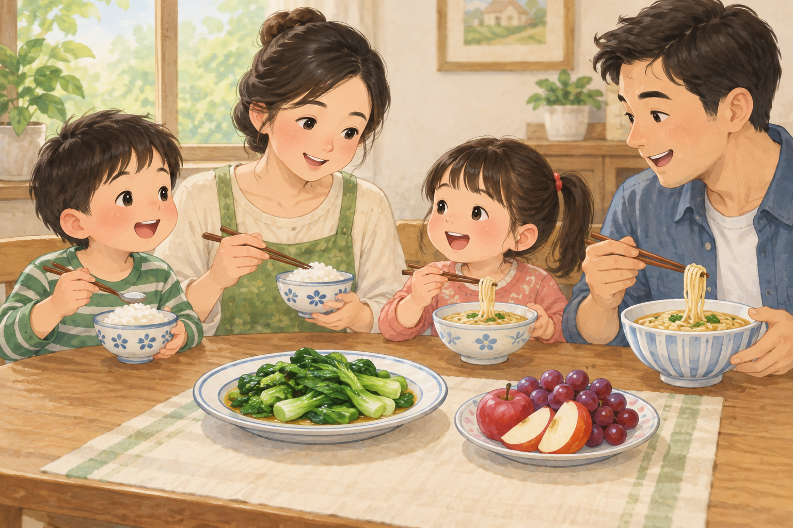
碗里有米饭，盘里有青菜，还有面条和水果。
生成提示词
Use case: illustration-story. One finished landscape 3:2 picture-book illustration for a Chinese literacy app, ages 5–6. Warm cream, sage green and natural muted colors; soft hand-painted gouache texture, friendly expressive East Asian people where the story needs people, clear subjects readable on a phone, uncluttered background. Illustrate the exact Chinese story below, interpreting actions and relationships literally and accurately. Use one coherent scene unless the story explicitly needs successive moments; for a sequence use two or three clearly separated wordless narrative panels, consistent characters and setting. No titles, captions, lettering, numbers, speech bubbles, logos or watermarks. No flashcard grids. No additional narrative characters or unrelated props. Natural anatomy, clear hands and object contact, all important subjects fully in frame. Chapter: 吃饭啦. Exact story (do not print text): 碗里有米饭，盘里有青菜，还有面条和水果。 Composition and constraints: Show a family meal on a table: a bowl of cooked white rice, a plate of leafy green vegetables, a separate bowl of noodles and a small plate of fresh fruit. All four categories clearly identifiable. No text, no invented exotic foods.
c017 坐好再出发
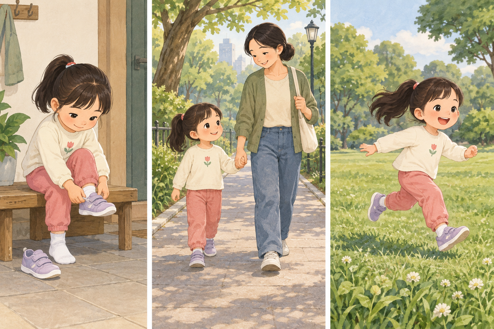
我坐下穿鞋，再站起来。去公园的路上慢慢走，到草地再跑。
生成提示词
Use case: illustration-story. One finished landscape 3:2 picture-book illustration for a Chinese literacy app, ages 5–6. Warm cream, sage green and natural muted colors; soft hand-painted gouache texture, friendly expressive East Asian people where the story needs people, clear subjects readable on a phone, uncluttered background. Illustrate the exact Chinese story below, interpreting actions and relationships literally and accurately. Use one coherent scene unless the story explicitly needs successive moments; for a sequence use two or three clearly separated wordless narrative panels, consistent characters and setting. No titles, captions, lettering, numbers, speech bubbles, logos or watermarks. No flashcard grids. No additional narrative characters or unrelated props. Natural anatomy, clear hands and object contact, all important subjects fully in frame. Chapter: 坐好再出发. Exact story (do not print text): 我坐下穿鞋，再站起来。去公园的路上慢慢走，到草地再跑。 Composition and constraints: Three chronological wordless panels: child sitting on a low bench putting on shoes; same child walking calmly beside an adult on park path; same child running happily only on grass. No running in road.
c018 我们一起做
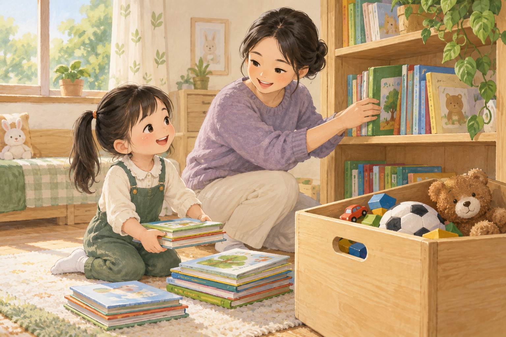
我是小帮手，我和你一起收书。收好了，也不乱放玩具。
生成提示词
Use case: illustration-story. One finished landscape 3:2 picture-book illustration for a Chinese literacy app, ages 5–6. Warm cream, sage green and natural muted colors; soft hand-painted gouache texture, friendly expressive East Asian people where the story needs people, clear subjects readable on a phone, uncluttered background. Illustrate the exact Chinese story below, interpreting actions and relationships literally and accurately. Use one coherent scene unless the story explicitly needs successive moments; for a sequence use two or three clearly separated wordless narrative panels, consistent characters and setting. No titles, captions, lettering, numbers, speech bubbles, logos or watermarks. No flashcard grids. No additional narrative characters or unrelated props. Natural anatomy, clear hands and object contact, all important subjects fully in frame. Chapter: 我们一起做. Exact story (do not print text): 我是小帮手，我和你一起收书。收好了，也不乱放玩具。
c019 我的朋友们
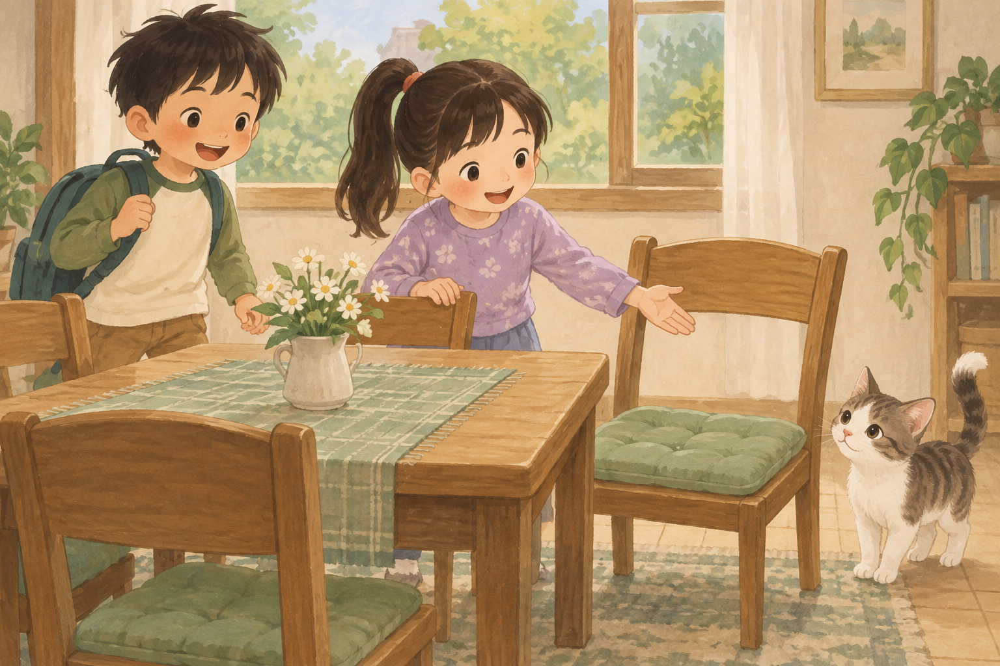
他来了，她也来了。它是一只小猫，我们给它留了一个位置。
生成提示词
Use case: illustration-story. One finished landscape 3:2 picture-book illustration for a Chinese literacy app, ages 5–6. Warm cream, sage green and natural muted colors; soft hand-painted gouache texture, friendly expressive East Asian people where the story needs people, clear subjects readable on a phone, uncluttered background. Illustrate the exact Chinese story below, interpreting actions and relationships literally and accurately. Use one coherent scene unless the story explicitly needs successive moments; for a sequence use two or three clearly separated wordless narrative panels, consistent characters and setting. No titles, captions, lettering, numbers, speech bubbles, logos or watermarks. No flashcard grids. No additional narrative characters or unrelated props. Natural anatomy, clear hands and object contact, all important subjects fully in frame. Chapter: 我的朋友们. Exact story (do not print text): 他来了，她也来了。它是一只小猫，我们给它留了一个位置。
c020 问一问再动手
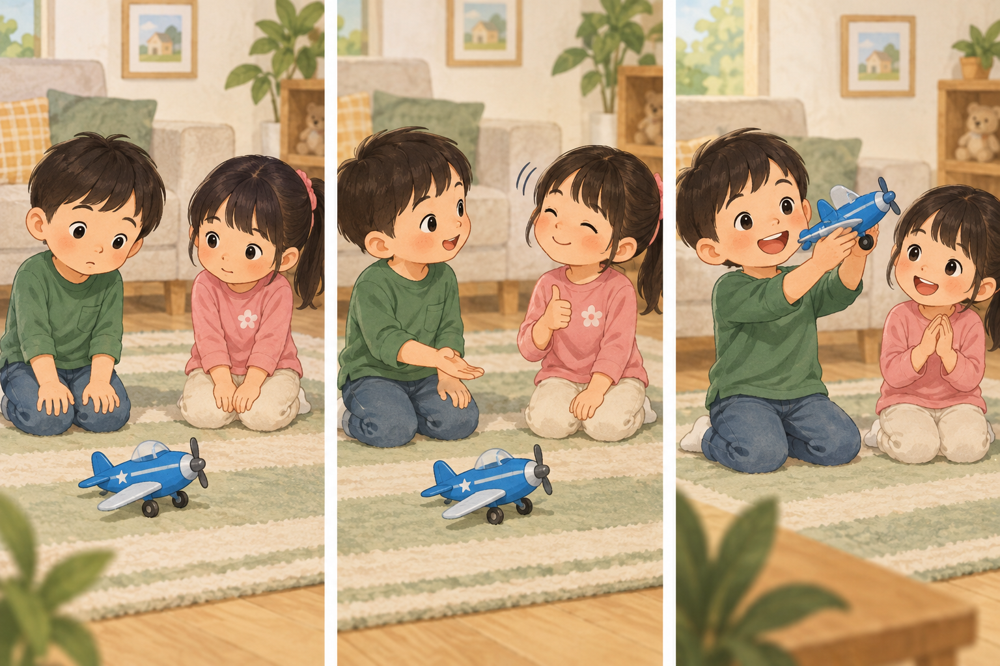
这是什么？那是谁的？我先问清楚，再拿来玩。
生成提示词
Use case: illustration-story. Warm gouache landscape 3:2 children's book illustration for ages 5–6, East Asian children, cream and sage colors, no text, no letters. Three wordless panels left to right with same boy in green shirt and girl in pink shirt and same blue toy airplane. Exact narrative: 这是什么？那是谁的？我先问清楚，再拿来玩。 CRITICAL: first panel toy airplane rests on floor, boy looks curiously with hands resting on his own knees. Second panel toy still rests on floor UNTOUCHED, boy asks girl with an open empty palm, girl smiles and nods permission. Third panel only AFTER permission boy now holds airplane and plays while girl smiles. NO child touching or holding toy in first TWO panels. Clear natural anatomy, friendly expressions, uncluttered home setting, all subjects visible. No captions or speech bubbles.
c021 幼儿园的一天
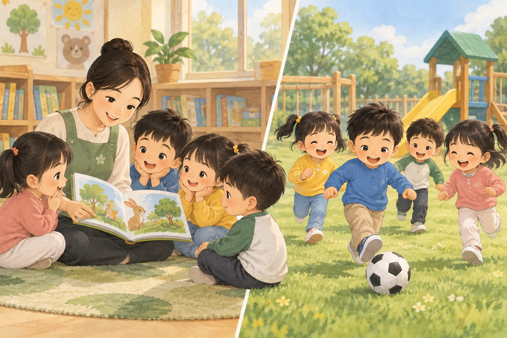
幼儿园里，老师和同学一起看书。我们学习，也一起玩。
生成提示词
Use case: illustration-story. One finished landscape 3:2 picture-book illustration for a Chinese literacy app, ages 5–6. Warm cream, sage green and natural muted colors; soft hand-painted gouache texture, friendly expressive East Asian people where the story needs people, clear subjects readable on a phone, uncluttered background. Illustrate the exact Chinese story below, interpreting actions and relationships literally and accurately. Use one coherent scene unless the story explicitly needs successive moments; for a sequence use two or three clearly separated wordless narrative panels, consistent characters and setting. No titles, captions, lettering, numbers, speech bubbles, logos or watermarks. No flashcard grids. No additional narrative characters or unrelated props. Natural anatomy, clear hands and object contact, all important subjects fully in frame. Chapter: 幼儿园的一天. Exact story (do not print text): 幼儿园里，老师和同学一起看书。我们学习，也一起玩。
c022 走进教室
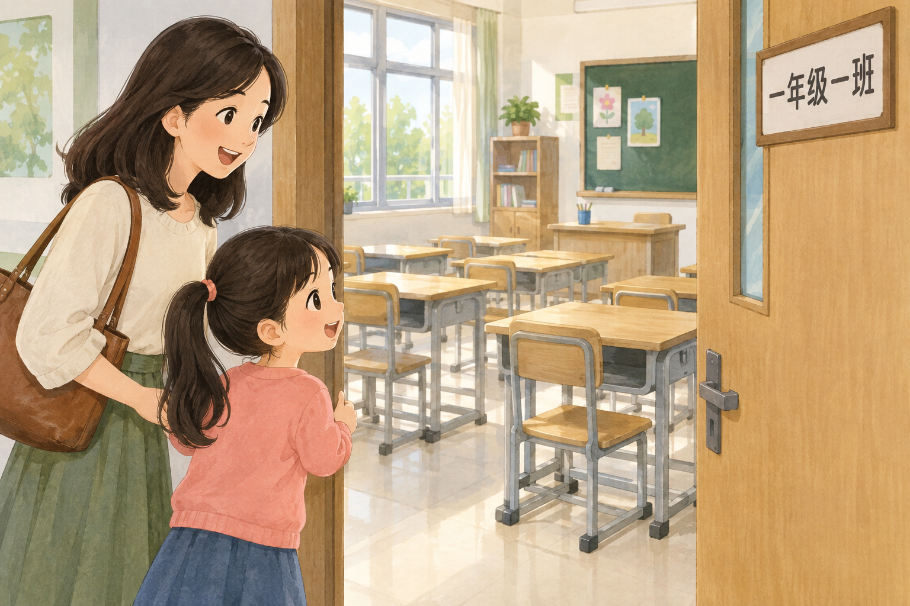
我和妈妈参观学校。教室里有桌子，门上写着班级。
生成提示词
Use case: illustration-story. One finished landscape 3:2 picture-book illustration for a Chinese literacy app, ages 5–6. Warm cream, sage green and natural muted colors; soft hand-painted gouache texture, friendly expressive East Asian people where the story needs people, clear subjects readable on a phone, uncluttered background. Illustrate the exact Chinese story below, interpreting actions and relationships literally and accurately. Use one coherent scene unless the story explicitly needs successive moments; for a sequence use two or three clearly separated wordless narrative panels, consistent characters and setting. No titles, captions, lettering, numbers, speech bubbles, logos or watermarks. No flashcard grids. No additional narrative characters or unrelated props. Natural anatomy, clear hands and object contact, all important subjects fully in frame. Chapter: 走进教室. Exact story (do not print text): 我和妈妈参观学校。教室里有桌子，门上写着班级。
c023 收好我的用品
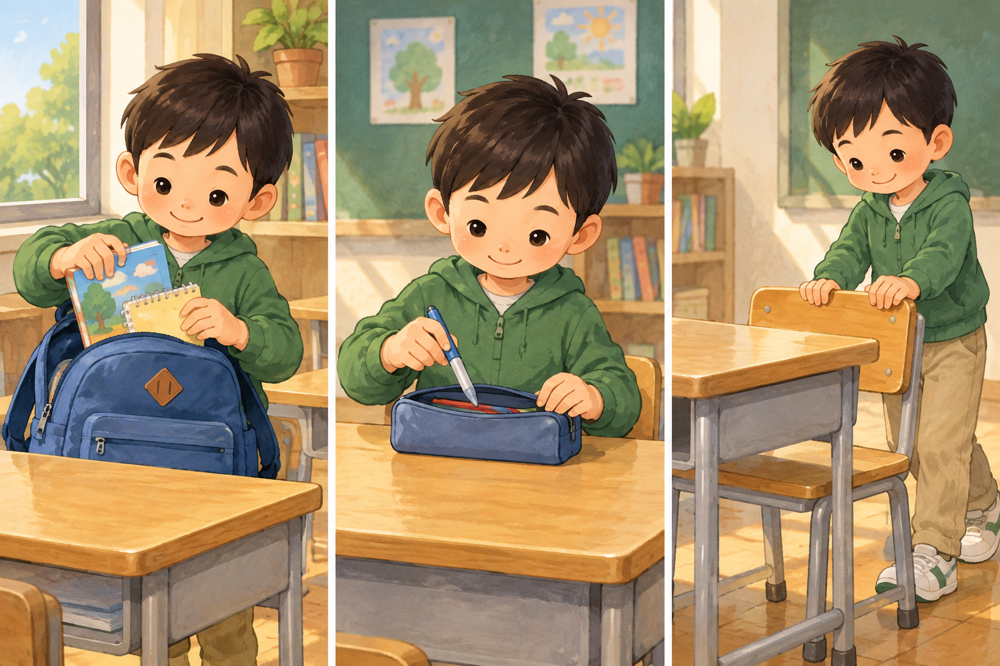
我把书和本子放进书包，把笔收好，再把椅子推回去。
生成提示词
Use case: illustration-story. One finished landscape 3:2 picture-book illustration for a Chinese literacy app, ages 5–6. Warm cream, sage green and natural muted colors; soft hand-painted gouache texture, friendly expressive East Asian people where the story needs people, clear subjects readable on a phone, uncluttered background. Illustrate the exact Chinese story below, interpreting actions and relationships literally and accurately. Use one coherent scene unless the story explicitly needs successive moments; for a sequence use two or three clearly separated wordless narrative panels, consistent characters and setting. No titles, captions, lettering, numbers, speech bubbles, logos or watermarks. No flashcard grids. No additional narrative characters or unrelated props. Natural anatomy, clear hands and object contact, all important subjects fully in frame. Chapter: 收好我的用品. Exact story (do not print text): 我把书和本子放进书包，把笔收好，再把椅子推回去。
c024 读读画画
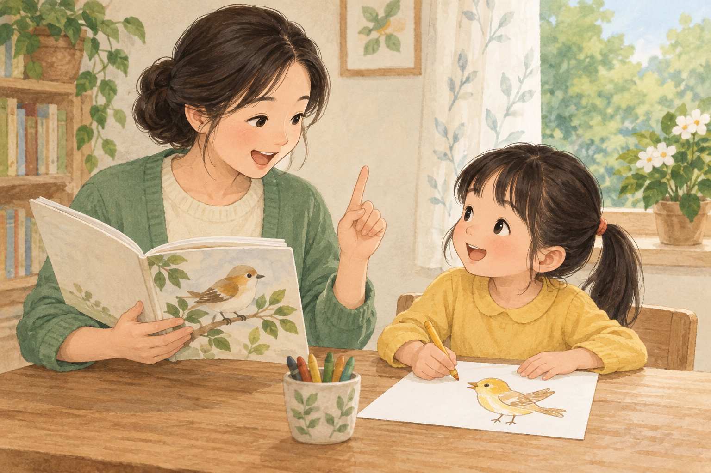
我读一句，你听一句；我说故事，你画小鸟。写字可以以后慢慢学。
生成提示词
Use case: illustration-story. One finished landscape 3:2 picture-book illustration for a Chinese literacy app, ages 5–6. Warm cream, sage green and natural muted colors; soft hand-painted gouache texture, friendly expressive East Asian people where the story needs people, clear subjects readable on a phone, uncluttered background. Illustrate the exact Chinese story below, interpreting actions and relationships literally and accurately. Use one coherent scene unless the story explicitly needs successive moments; for a sequence use two or three clearly separated wordless narrative panels, consistent characters and setting. No titles, captions, lettering, numbers, speech bubbles, logos or watermarks. No flashcard grids. No additional narrative characters or unrelated props. Natural anatomy, clear hands and object contact, all important subjects fully in frame. Chapter: 读读画画. Exact story (do not print text): 我读一句，你听一句；我说故事，你画小鸟。写字可以以后慢慢学。
c025 开口表达
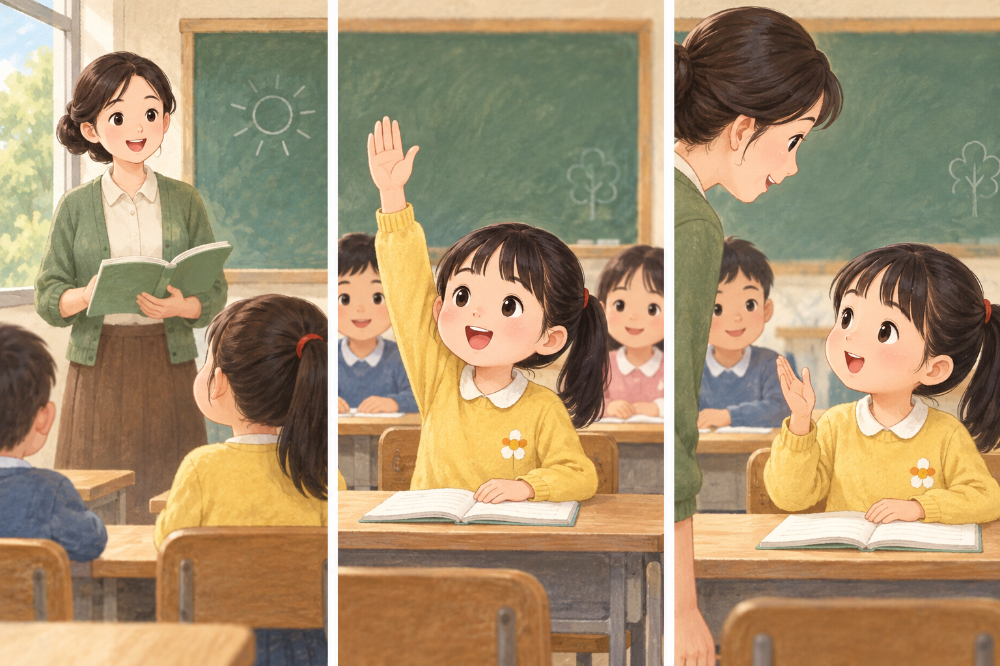
老师叫我的名字，我回答：“我在！”想讲自己的话，可以先问一声。
生成提示词
Use case: illustration-story. One finished landscape 3:2 picture-book illustration for a Chinese literacy app, ages 5–6. Warm cream, sage green and natural muted colors; soft hand-painted gouache texture, friendly expressive East Asian people where the story needs people, clear subjects readable on a phone, uncluttered background. Illustrate the exact Chinese story below, interpreting actions and relationships literally and accurately. Use one coherent scene unless the story explicitly needs successive moments; for a sequence use two or three clearly separated wordless narrative panels, consistent characters and setting. No titles, captions, lettering, numbers, speech bubbles, logos or watermarks. No flashcard grids. No additional narrative characters or unrelated props. Natural anatomy, clear hands and object contact, all important subjects fully in frame. Chapter: 开口表达. Exact story (do not print text): 老师叫我的名字，我回答：“我在！”想讲自己的话，可以先问一声。
c026 游戏时间
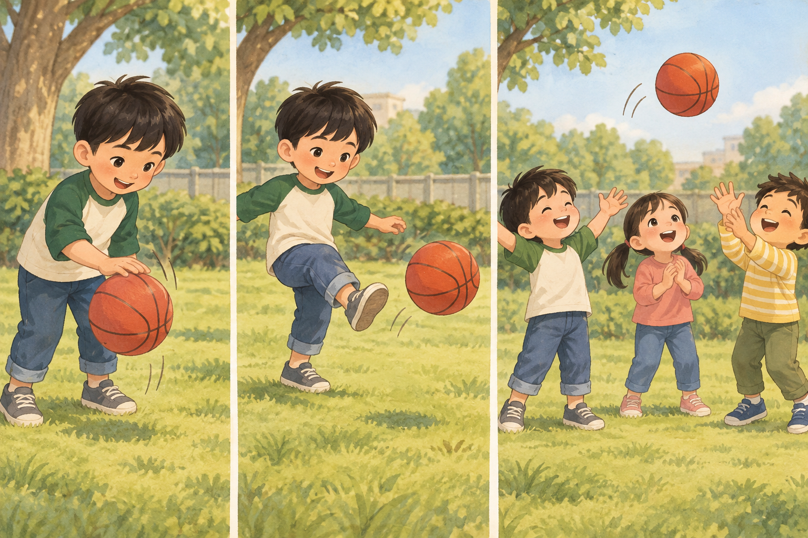
玩球时先拍一拍，再轻轻踢。球跳起来，大家笑了。
生成提示词
Use case: illustration-story. One finished landscape 3:2 picture-book illustration for a Chinese literacy app, ages 5–6. Warm cream, sage green and natural muted colors; soft hand-painted gouache texture, friendly expressive East Asian people where the story needs people, clear subjects readable on a phone, uncluttered background. Illustrate the exact Chinese story below, interpreting actions and relationships literally and accurately. Use one coherent scene unless the story explicitly needs successive moments; for a sequence use two or three clearly separated wordless narrative panels, consistent characters and setting. No titles, captions, lettering, numbers, speech bubbles, logos or watermarks. No flashcard grids. No additional narrative characters or unrelated props. Natural anatomy, clear hands and object contact, all important subjects fully in frame. Chapter: 游戏时间. Exact story (do not print text): 玩球时先拍一拍，再轻轻踢。球跳起来，大家笑了。
c027 轮流玩玩具
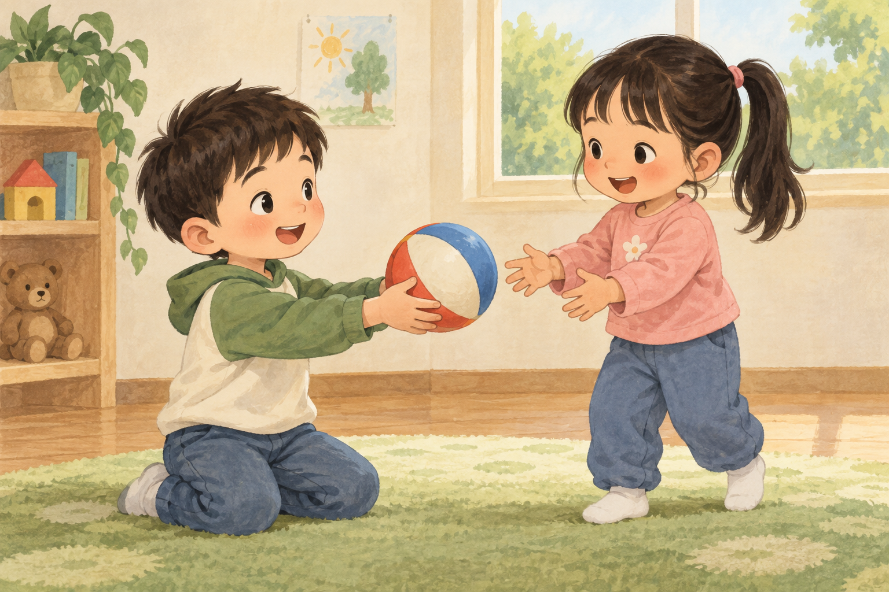
朋友想玩球，我说：“给你。你玩一会儿，我等一等。”
生成提示词
Use case: illustration-story. One finished landscape 3:2 picture-book illustration for a Chinese literacy app, ages 5–6. Warm cream, sage green and natural muted colors; soft hand-painted gouache texture, friendly expressive East Asian people where the story needs people, clear subjects readable on a phone, uncluttered background. Illustrate the exact Chinese story below, interpreting actions and relationships literally and accurately. Use one coherent scene unless the story explicitly needs successive moments; for a sequence use two or three clearly separated wordless narrative panels, consistent characters and setting. No titles, captions, lettering, numbers, speech bubbles, logos or watermarks. No flashcard grids. No additional narrative characters or unrelated props. Natural anatomy, clear hands and object contact, all important subjects fully in frame. Chapter: 轮流玩玩具. Exact story (do not print text): 朋友想玩球，我说：“给你。你玩一会儿，我等一等。”
c028 礼貌小客人
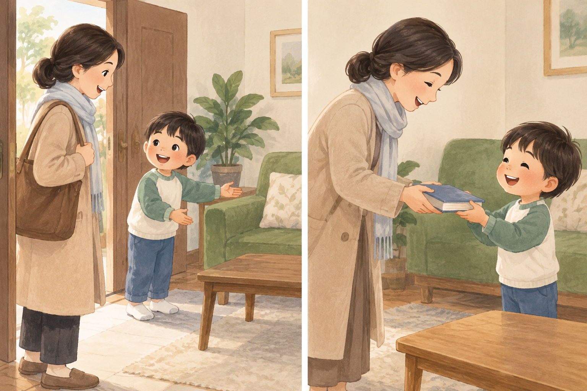
客人来了，我说：“您好，请坐。”收到帮助，我说：“谢谢您。”
生成提示词
Use case: illustration-story. One finished landscape 3:2 picture-book illustration for a Chinese literacy app, ages 5–6. Warm cream, sage green and natural muted colors; soft hand-painted gouache texture, friendly expressive East Asian people where the story needs people, clear subjects readable on a phone, uncluttered background. Illustrate the exact Chinese story below, interpreting actions and relationships literally and accurately. Use one coherent scene unless the story explicitly needs successive moments; for a sequence use two or three clearly separated wordless narrative panels, consistent characters and setting. No titles, captions, lettering, numbers, speech bubbles, logos or watermarks. No flashcard grids. No additional narrative characters or unrelated props. Natural anatomy, clear hands and object contact, all important subjects fully in frame. Chapter: 礼貌小客人. Exact story (do not print text): 客人来了，我说：“您好，请坐。”收到帮助，我说：“谢谢您。”
c029 早起和休息
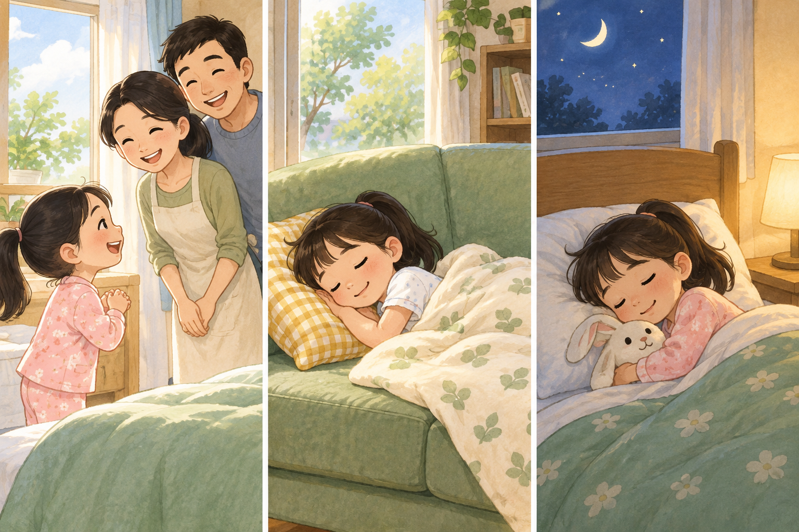
早上醒来，我向家人问好。中午休息，晚上按时睡觉。
生成提示词
Use case: illustration-story. One finished landscape 3:2 picture-book illustration for a Chinese literacy app, ages 5–6. Warm cream, sage green and natural muted colors; soft hand-painted gouache texture, friendly expressive East Asian people where the story needs people, clear subjects readable on a phone, uncluttered background. Illustrate the exact Chinese story below, interpreting actions and relationships literally and accurately. Use one coherent scene unless the story explicitly needs successive moments; for a sequence use two or three clearly separated wordless narrative panels, consistent characters and setting. No titles, captions, lettering, numbers, speech bubbles, logos or watermarks. No flashcard grids. No additional narrative characters or unrelated props. Natural anatomy, clear hands and object contact, all important subjects fully in frame. Chapter: 早起和休息. Exact story (do not print text): 早上醒来，我向家人问好。中午休息，晚上按时睡觉。
c030 洗手前看看少了什么
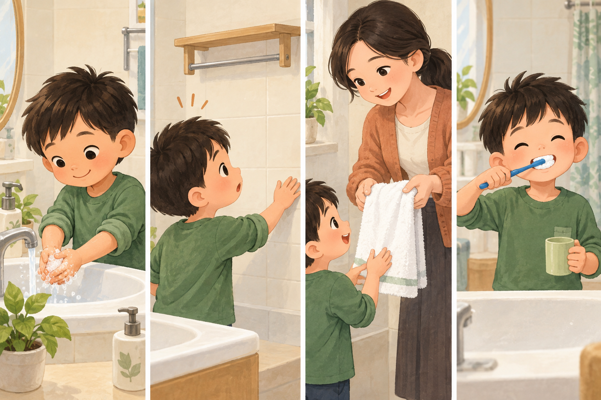
洗手后找毛巾，架上没有。妈妈拿来干净毛巾，我再去刷牙。
生成提示词
Use case: illustration-story. One finished landscape 3:2 picture-book illustration for a Chinese literacy app, ages 5–6. Warm cream, sage green and natural muted colors; soft hand-painted gouache texture, friendly expressive East Asian people where the story needs people, clear subjects readable on a phone, uncluttered background. Illustrate the exact Chinese story below, interpreting actions and relationships literally and accurately. Use one coherent scene unless the story explicitly needs successive moments; for a sequence use two or three clearly separated wordless narrative panels, consistent characters and setting. No titles, captions, lettering, numbers, speech bubbles, logos or watermarks. No flashcard grids. No additional narrative characters or unrelated props. Natural anatomy, clear hands and object contact, all important subjects fully in frame. Chapter: 洗手前看看少了什么. Exact story (do not print text): 洗手后找毛巾，架上没有。妈妈拿来干净毛巾，我再去刷牙。
c031 干净的衣服
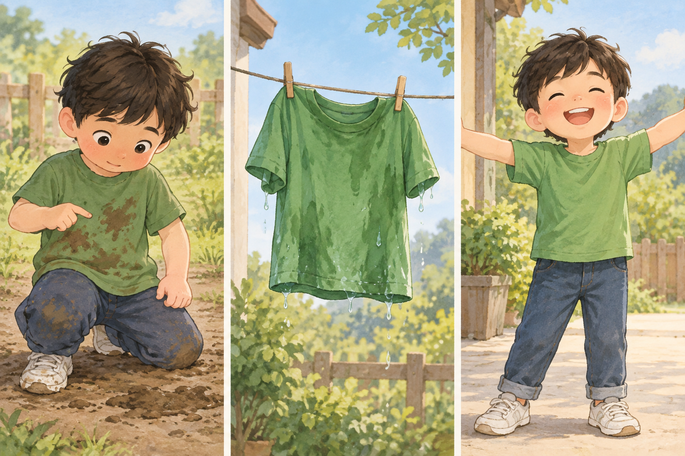
衣服脏了要换，洗净后湿湿的。晒干了，穿着才舒服。
生成提示词
Use case: illustration-story. One finished landscape 3:2 picture-book illustration for a Chinese literacy app, ages 5–6. Warm cream, sage green and natural muted colors; soft hand-painted gouache texture, friendly expressive East Asian people where the story needs people, clear subjects readable on a phone, uncluttered background. Illustrate the exact Chinese story below, interpreting actions and relationships literally and accurately. Use one coherent scene unless the story explicitly needs successive moments; for a sequence use two or three clearly separated wordless narrative panels, consistent characters and setting. No titles, captions, lettering, numbers, speech bubbles, logos or watermarks. No flashcard grids. No additional narrative characters or unrelated props. Natural anatomy, clear hands and object contact, all important subjects fully in frame. Chapter: 干净的衣服. Exact story (do not print text): 衣服脏了要换，洗净后湿湿的。晒干了，穿着才舒服。 Composition and constraints: Show three clear panels: same green shirt dirty with mud, the washed shirt wet on a clothesline, child fully dressed in the same clean dry green shirt. No undressing.
c032 洗澡和梳头
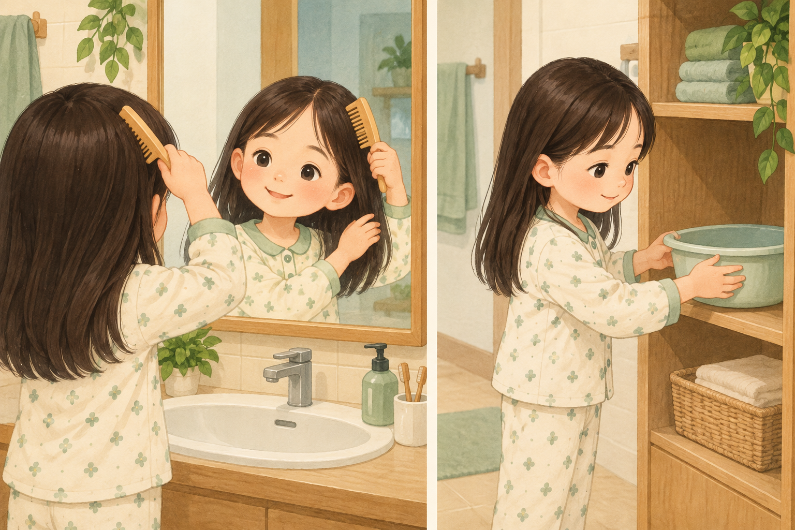
浴室里洗完澡，我对着镜子梳头，再把脸盆放好。
生成提示词
Use case: illustration-story. One finished landscape 3:2 picture-book illustration for a Chinese literacy app, ages 5–6. Warm cream, sage green and natural muted colors; soft hand-painted gouache texture, friendly expressive East Asian people where the story needs people, clear subjects readable on a phone, uncluttered background. Illustrate the exact Chinese story below, interpreting actions and relationships literally and accurately. Use one coherent scene unless the story explicitly needs successive moments; for a sequence use two or three clearly separated wordless narrative panels, consistent characters and setting. No titles, captions, lettering, numbers, speech bubbles, logos or watermarks. No flashcard grids. No additional narrative characters or unrelated props. Natural anatomy, clear hands and object contact, all important subjects fully in frame. Chapter: 洗澡和梳头. Exact story (do not print text): 浴室里洗完澡，我对着镜子梳头，再把脸盆放好。 Composition and constraints: Show the child AFTER bathing, fully dressed in long-sleeved pajamas throughout. Two panels: combing hair in mirror, putting a small washbasin neatly on a shelf. No bathing or undressing scene.
c033 认识厕所标识
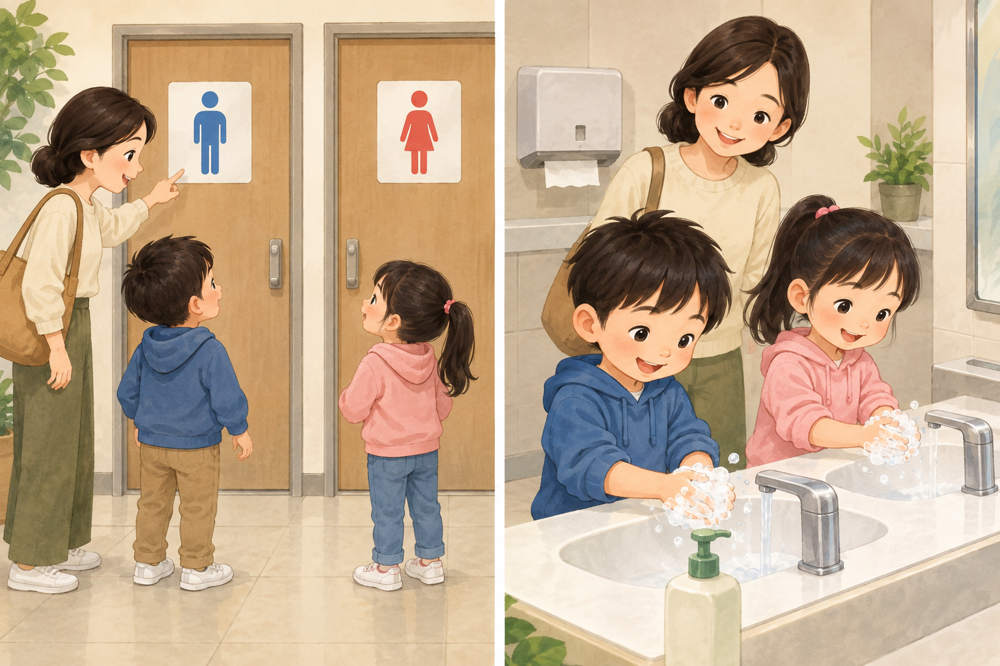
男孩和女孩都要学会看厕所标识。方便后，用好纸，再洗手。
生成提示词
Use case: illustration-story. One finished landscape 3:2 picture-book illustration for a Chinese literacy app, ages 5–6. Warm cream, sage green and natural muted colors; soft hand-painted gouache texture, friendly expressive East Asian people where the story needs people, clear subjects readable on a phone, uncluttered background. Illustrate the exact Chinese story below, interpreting actions and relationships literally and accurately. Use one coherent scene unless the story explicitly needs successive moments; for a sequence use two or three clearly separated wordless narrative panels, consistent characters and setting. No titles, captions, lettering, numbers, speech bubbles, logos or watermarks. No flashcard grids. No additional narrative characters or unrelated props. Natural anatomy, clear hands and object contact, all important subjects fully in frame. Chapter: 认识厕所标识. Exact story (do not print text): 男孩和女孩都要学会看厕所标识。方便后，用好纸，再洗手。 Composition and constraints: Two panels: fully clothed boy and girl with adult looking at clear standard male/female restroom pictograms on closed doors; then both washing hands at sinks with soap. Toilet paper dispenser may appear as context. No actual toilet use or undressing, no letters.
c034 午餐准备好
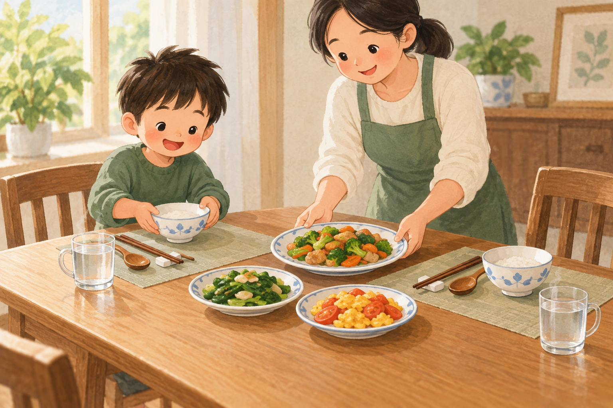
饭碗和盘子放好了，筷子和勺子在旁边。杯里有温水。
生成提示词
Use case: illustration-story. One finished landscape 3:2 picture-book illustration for a Chinese literacy app, ages 5–6. Warm cream, sage green and natural muted colors; soft hand-painted gouache texture, friendly expressive East Asian people where the story needs people, clear subjects readable on a phone, uncluttered background. Illustrate the exact Chinese story below, interpreting actions and relationships literally and accurately. Use one coherent scene unless the story explicitly needs successive moments; for a sequence use two or three clearly separated wordless narrative panels, consistent characters and setting. No titles, captions, lettering, numbers, speech bubbles, logos or watermarks. No flashcard grids. No additional narrative characters or unrelated props. Natural anatomy, clear hands and object contact, all important subjects fully in frame. Chapter: 午餐准备好. Exact story (do not print text): 饭碗和盘子放好了，筷子和勺子在旁边。杯里有温水。
c035 我的小床
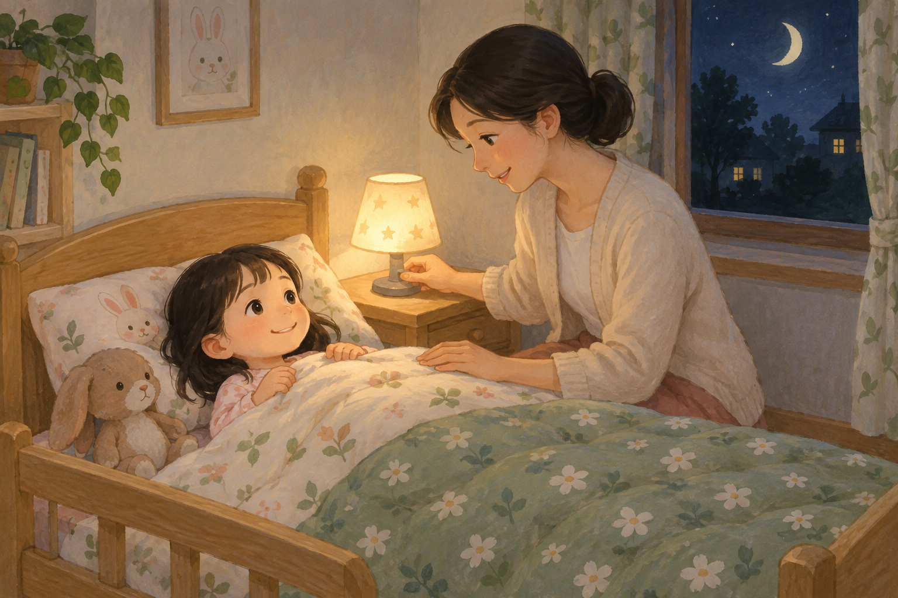
小床上有被子和枕头。窗外天黑了，妈妈关小台灯，陪我休息。
生成提示词
Use case: illustration-story. One finished landscape 3:2 picture-book illustration for a Chinese literacy app, ages 5–6. Warm cream, sage green and natural muted colors; soft hand-painted gouache texture, friendly expressive East Asian people where the story needs people, clear subjects readable on a phone, uncluttered background. Illustrate the exact Chinese story below, interpreting actions and relationships literally and accurately. Use one coherent scene unless the story explicitly needs successive moments; for a sequence use two or three clearly separated wordless narrative panels, consistent characters and setting. No titles, captions, lettering, numbers, speech bubbles, logos or watermarks. No flashcard grids. No additional narrative characters or unrelated props. Natural anatomy, clear hands and object contact, all important subjects fully in frame. Chapter: 我的小床. Exact story (do not print text): 小床上有被子和枕头。窗外天黑了，妈妈关小台灯，陪我休息。
c036 我会整理
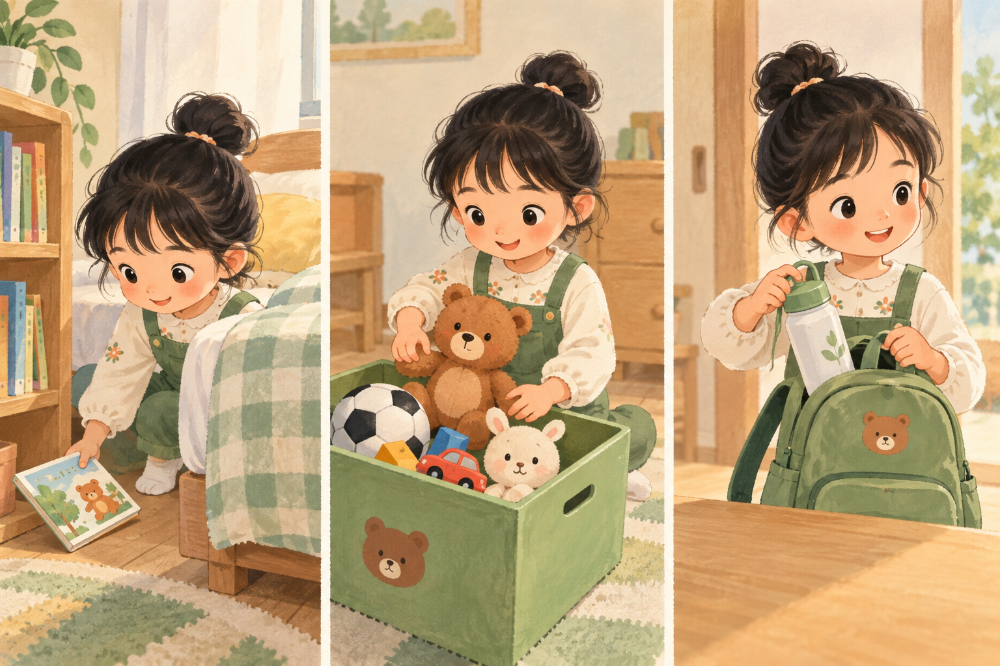
我找到小书，拿来放好；再收起玩具，带上水杯。
生成提示词
Use case: illustration-story. One finished landscape 3:2 picture-book illustration for a Chinese literacy app, ages 5–6. Warm cream, sage green and natural muted colors; soft hand-painted gouache texture, friendly expressive East Asian people where the story needs people, clear subjects readable on a phone, uncluttered background. Illustrate the exact Chinese story below, interpreting actions and relationships literally and accurately. Use one coherent scene unless the story explicitly needs successive moments; for a sequence use two or three clearly separated wordless narrative panels, consistent characters and setting. No titles, captions, lettering, numbers, speech bubbles, logos or watermarks. No flashcard grids. No additional narrative characters or unrelated props. Natural anatomy, clear hands and object contact, all important subjects fully in frame. Chapter: 我会整理. Exact story (do not print text): 我找到小书，拿来放好；再收起玩具，带上水杯。
c037 排队不着急
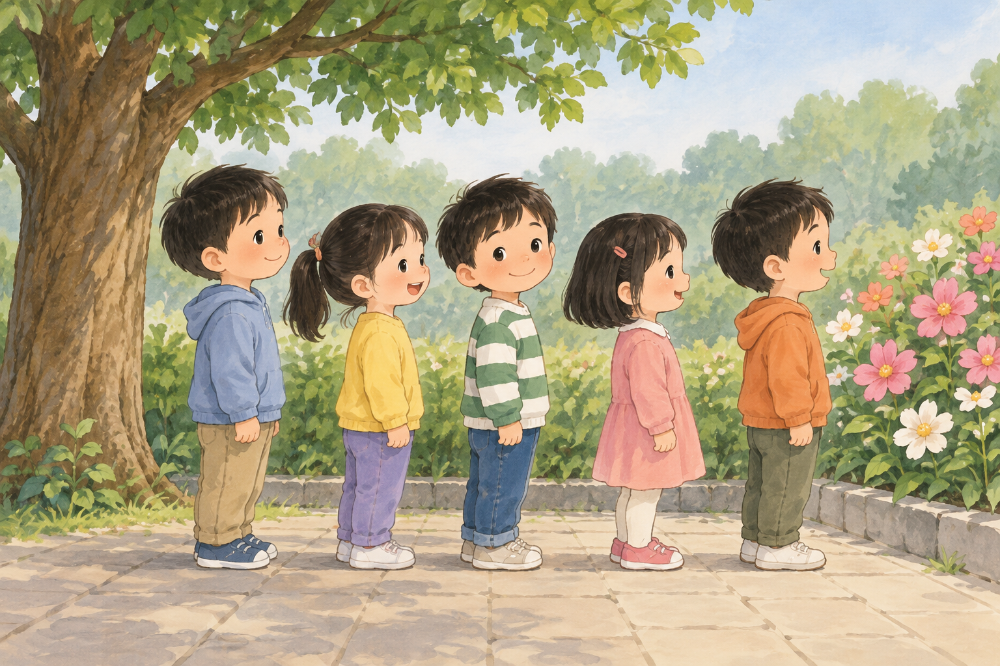
我在队伍中间，前后都有朋友。左边是树，右边是花。
生成提示词
Use case: illustration-story. One finished landscape 3:2 picture-book illustration for a Chinese literacy app, ages 5–6. Warm cream, sage green and natural muted colors; soft hand-painted gouache texture, friendly expressive East Asian people where the story needs people, clear subjects readable on a phone, uncluttered background. Illustrate the exact Chinese story below, interpreting actions and relationships literally and accurately. Use one coherent scene unless the story explicitly needs successive moments; for a sequence use two or three clearly separated wordless narrative panels, consistent characters and setting. No titles, captions, lettering, numbers, speech bubbles, logos or watermarks. No flashcard grids. No additional narrative characters or unrelated props. Natural anatomy, clear hands and object contact, all important subjects fully in frame. Chapter: 排队不着急. Exact story (do not print text): 我在队伍中间，前后都有朋友。左边是树，右边是花。
c038 游戏的顺序
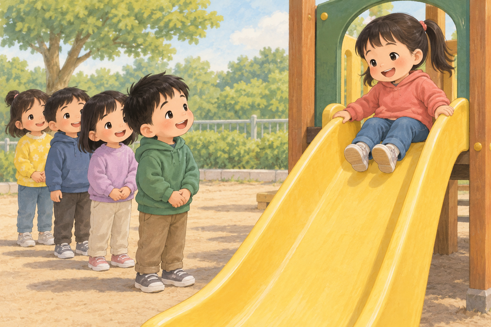
玩滑梯先排队。这次你先，下次再轮到我。
生成提示词
Use case: illustration-story. One finished landscape 3:2 picture-book illustration for a Chinese literacy app, ages 5–6. Warm cream, sage green and natural muted colors; soft hand-painted gouache texture, friendly expressive East Asian people where the story needs people, clear subjects readable on a phone, uncluttered background. Illustrate the exact Chinese story below, interpreting actions and relationships literally and accurately. Use one coherent scene unless the story explicitly needs successive moments; for a sequence use two or three clearly separated wordless narrative panels, consistent characters and setting. No titles, captions, lettering, numbers, speech bubbles, logos or watermarks. No flashcard grids. No additional narrative characters or unrelated props. Natural anatomy, clear hands and object contact, all important subjects fully in frame. Chapter: 游戏的顺序. Exact story (do not print text): 玩滑梯先排队。这次你先，下次再轮到我。
c039 保护自己
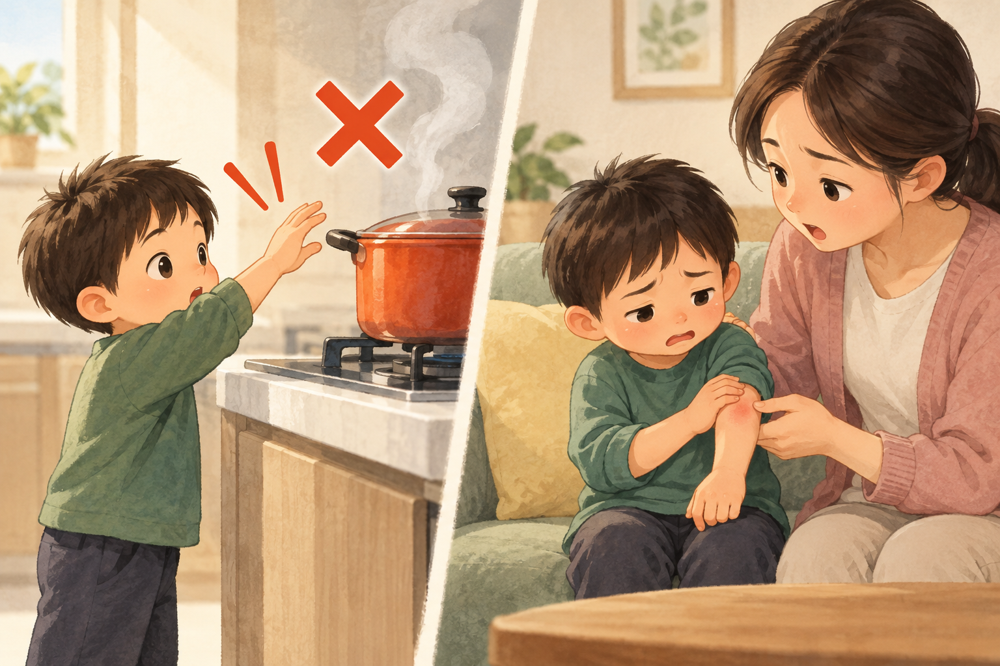
危险的东西不要碰。身体痛了或生病了，要告诉照顾我的大人。
生成提示词
Use case: illustration-story. One finished landscape 3:2 picture-book illustration for a Chinese literacy app, ages 5–6. Warm cream, sage green and natural muted colors; soft hand-painted gouache texture, friendly expressive East Asian people where the story needs people, clear subjects readable on a phone, uncluttered background. Illustrate the exact Chinese story below, interpreting actions and relationships literally and accurately. Use one coherent scene unless the story explicitly needs successive moments; for a sequence use two or three clearly separated wordless narrative panels, consistent characters and setting. No titles, captions, lettering, numbers, speech bubbles, logos or watermarks. No flashcard grids. No additional narrative characters or unrelated props. Natural anatomy, clear hands and object contact, all important subjects fully in frame. Chapter: 保护自己. Exact story (do not print text): 危险的东西不要碰。身体痛了或生病了，要告诉照顾我的大人。
c040 爱和帮助说出来
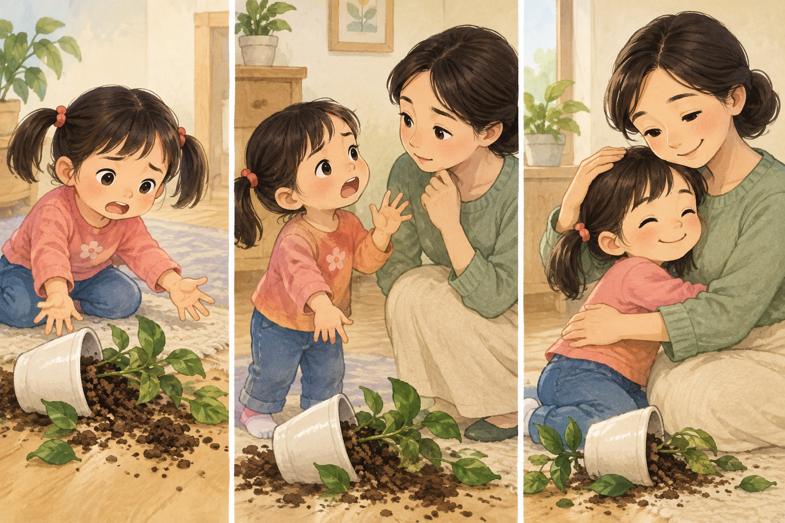
我着急地说：“请帮忙！”妈妈听我告诉她发生的事，用爱陪着我。
生成提示词
Use case: illustration-story. One finished landscape 3:2 picture-book illustration for a Chinese literacy app, ages 5–6. Warm cream, sage green and natural muted colors; soft hand-painted gouache texture, friendly expressive East Asian people where the story needs people, clear subjects readable on a phone, uncluttered background. Illustrate the exact Chinese story below, interpreting actions and relationships literally and accurately. Use one coherent scene unless the story explicitly needs successive moments; for a sequence use two or three clearly separated wordless narrative panels, consistent characters and setting. No titles, captions, lettering, numbers, speech bubbles, logos or watermarks. No flashcard grids. No additional narrative characters or unrelated props. Natural anatomy, clear hands and object contact, all important subjects fully in frame. Chapter: 爱和帮助说出来. Exact story (do not print text): 我着急地说：“请帮忙！”妈妈听我告诉她发生的事，用爱陪着我。
c042 池塘边的朋友
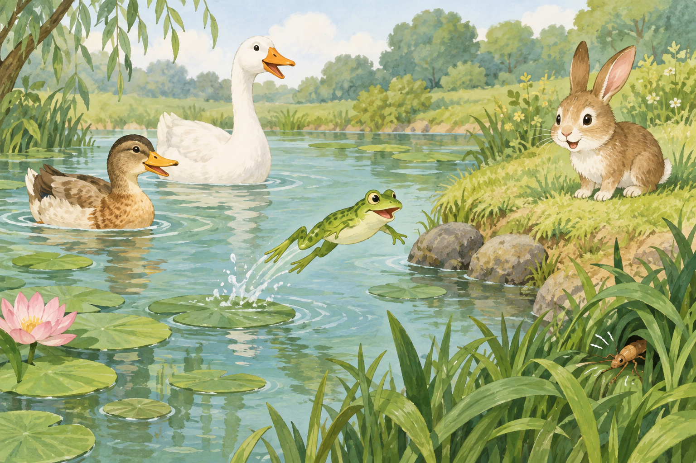
池塘里有鸭和鹅，岸边有兔子。青蛙跳过，小虫躲进草里。
生成提示词
Use case: illustration-story. One finished landscape 3:2 picture-book illustration for a Chinese literacy app, ages 5–6. Warm cream, sage green and natural muted colors; soft hand-painted gouache texture, friendly expressive East Asian people where the story needs people, clear subjects readable on a phone, uncluttered background. Illustrate the exact Chinese story below, interpreting actions and relationships literally and accurately. Use one coherent scene unless the story explicitly needs successive moments; for a sequence use two or three clearly separated wordless narrative panels, consistent characters and setting. No titles, captions, lettering, numbers, speech bubbles, logos or watermarks. No flashcard grids. No additional narrative characters or unrelated props. Natural anatomy, clear hands and object contact, all important subjects fully in frame. Chapter: 池塘边的朋友. Exact story (do not print text): 池塘里有鸭和鹅，岸边有兔子。青蛙跳过，小虫躲进草里。
c043 花丛里的昆虫
蚂蚁排着队，蜜蜂飞向花。蝴蝶落在另一朵花上。
生成提示词
Use case: illustration-story. One finished landscape 3:2 picture-book illustration for a Chinese literacy app, ages 5–6. Warm cream, sage green and natural muted colors; soft hand-painted gouache texture, friendly expressive East Asian people where the story needs people, clear subjects readable on a phone, uncluttered background. Illustrate the exact Chinese story below, interpreting actions and relationships literally and accurately. Use one coherent scene unless the story explicitly needs successive moments; for a sequence use two or three clearly separated wordless narrative panels, consistent characters and setting. No titles, captions, lettering, numbers, speech bubbles, logos or watermarks. No flashcard grids. No additional narrative characters or unrelated props. Natural anatomy, clear hands and object contact, all important subjects fully in frame. Chapter: 花丛里的昆虫. Exact story (do not print text): 蚂蚁排着队，蜜蜂飞向花。蝴蝶落在另一朵花上。
c044 听虫子唱歌
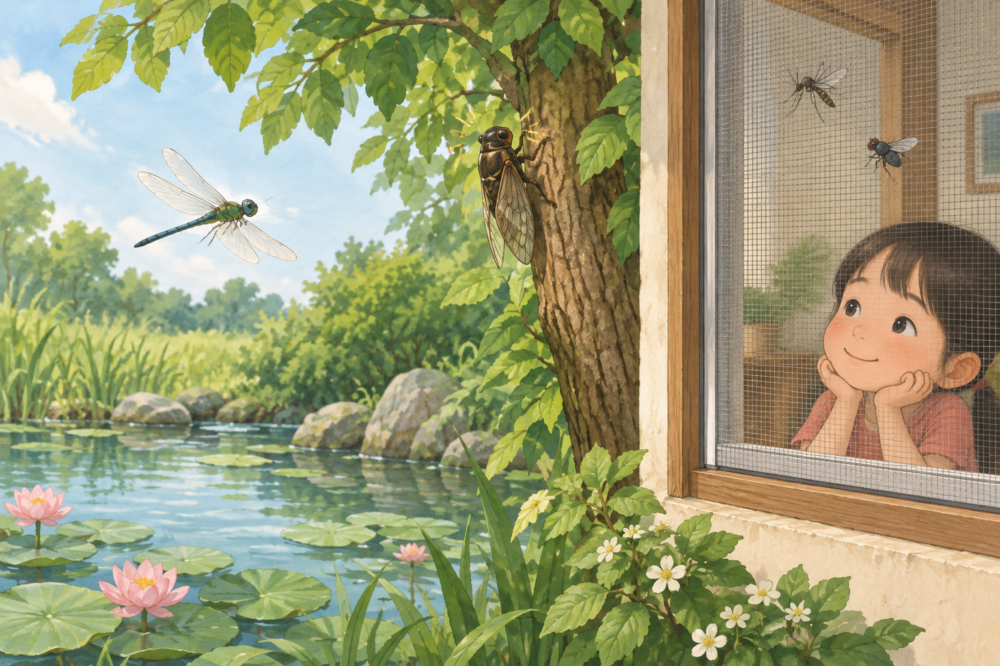
蜻蜓飞过池塘，蝉在树上叫。纱窗挡住蚊子和苍蝇。
生成提示词
Use case: illustration-story. One finished landscape 3:2 picture-book illustration for a Chinese literacy app, ages 5–6. Warm cream, sage green and natural muted colors; soft hand-painted gouache texture, friendly expressive East Asian people where the story needs people, clear subjects readable on a phone, uncluttered background. Illustrate the exact Chinese story below, interpreting actions and relationships literally and accurately. Use one coherent scene unless the story explicitly needs successive moments; for a sequence use two or three clearly separated wordless narrative panels, consistent characters and setting. No titles, captions, lettering, numbers, speech bubbles, logos or watermarks. No flashcard grids. No additional narrative characters or unrelated props. Natural anatomy, clear hands and object contact, all important subjects fully in frame. Chapter: 听虫子唱歌. Exact story (do not print text): 蜻蜓飞过池塘，蝉在树上叫。纱窗挡住蚊子和苍蝇。
c045 森林里的大动物
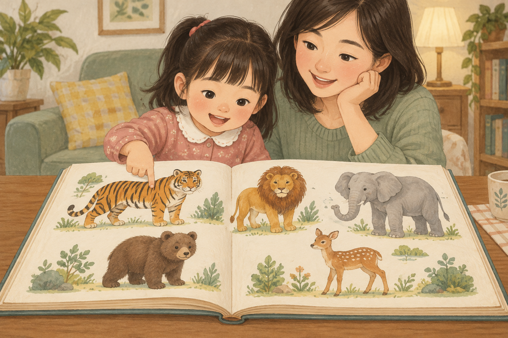
图画里有老虎、狮子、大象、小熊和小鹿。我指给妈妈看。
生成提示词
Use case: illustration-story. Landscape 3:2 warm gouache picture book art for preschool Chinese literacy. Exact story: 图画里有老虎、狮子、大象、小熊和小鹿。我指给妈妈看。 CRITICAL composition: A little East Asian girl and her mother sit safely INSIDE a cozy living room, looking at a large OPEN PICTURE BOOK resting on a table. The book fills the lower two thirds of the picture, with its rectangular page edges, central binding and table visibly surrounding it. On the flat printed pages are exactly five distinct animal drawings: striped tiger, male lion with mane, elephant, little brown bear and spotted deer. The girl points at one printed animal on the page. ALL FIVE animals exist ONLY as clearly flat drawings INSIDE the book page boundaries. No real animals around the people. Show mother's and girl's upper bodies above the book. Natural hands, friendly expressions, cream/sage muted palette, no letters, captions or watermark.
c046 树林里的伙伴
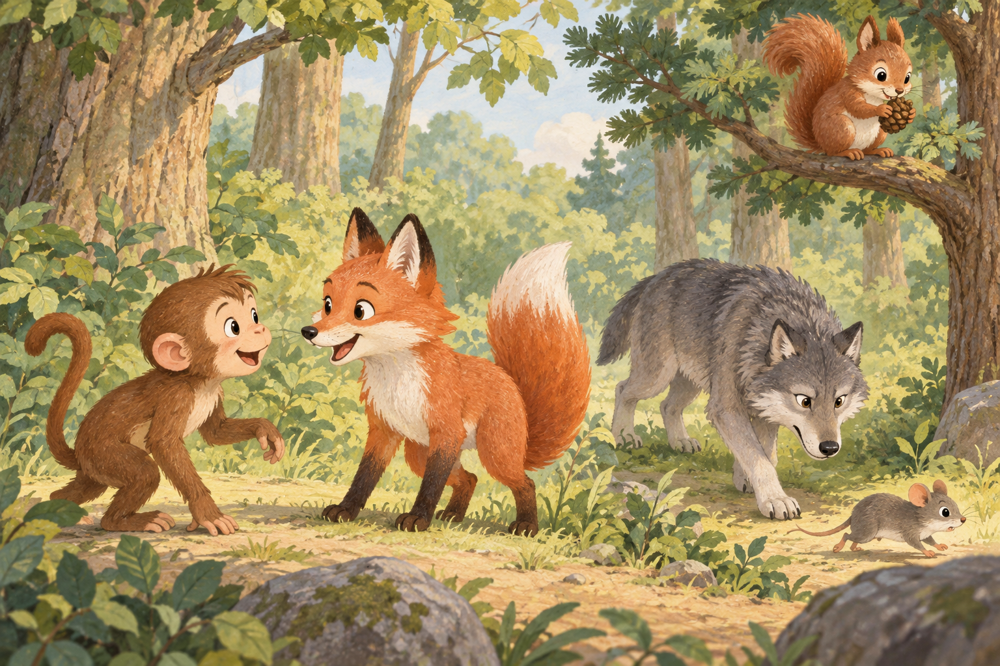
故事里，猴子碰见狐狸，灰狼找老鼠，松鼠正在树上吃东西。
生成提示词
Use case: illustration-story. One finished landscape 3:2 picture-book illustration for a Chinese literacy app, ages 5–6. Warm cream, sage green and natural muted colors; soft hand-painted gouache texture, friendly expressive East Asian people where the story needs people, clear subjects readable on a phone, uncluttered background. Illustrate the exact Chinese story below, interpreting actions and relationships literally and accurately. Use one coherent scene unless the story explicitly needs successive moments; for a sequence use two or three clearly separated wordless narrative panels, consistent characters and setting. No titles, captions, lettering, numbers, speech bubbles, logos or watermarks. No flashcard grids. No additional narrative characters or unrelated props. Natural anatomy, clear hands and object contact, all important subjects fully in frame. Chapter: 树林里的伙伴. Exact story (do not print text): 故事里，猴子碰见狐狸，灰狼找老鼠，松鼠正在树上吃东西。
c047 水里的动物
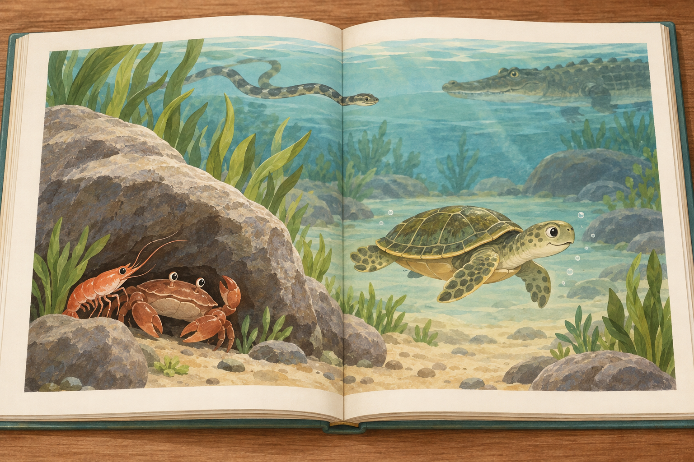
图书里，小虾和螃蟹躲在石边，乌龟游过去，远处有水蛇和鳄鱼。
生成提示词
Use case: illustration-story. One finished landscape 3:2 picture-book illustration for a Chinese literacy app, ages 5–6. Warm cream, sage green and natural muted colors; soft hand-painted gouache texture, friendly expressive East Asian people where the story needs people, clear subjects readable on a phone, uncluttered background. Illustrate the exact Chinese story below, interpreting actions and relationships literally and accurately. Use one coherent scene unless the story explicitly needs successive moments; for a sequence use two or three clearly separated wordless narrative panels, consistent characters and setting. No titles, captions, lettering, numbers, speech bubbles, logos or watermarks. No flashcard grids. No additional narrative characters or unrelated props. Natural anatomy, clear hands and object contact, all important subjects fully in frame. Chapter: 水里的动物. Exact story (do not print text): 图书里，小虾和螃蟹躲在石边，乌龟游过去，远处有水蛇和鳄鱼。 Critical framing: These are illustrations INSIDE a clearly visible large open picture book resting on a table. The book fills most of the frame, with visible page edges and binding. All named animals/plants/scenery are flat printed pictures within the page boundaries, never real creatures around a child. Use close-up book framing so all named subjects remain easy to recognize.
c048 谁在海里游
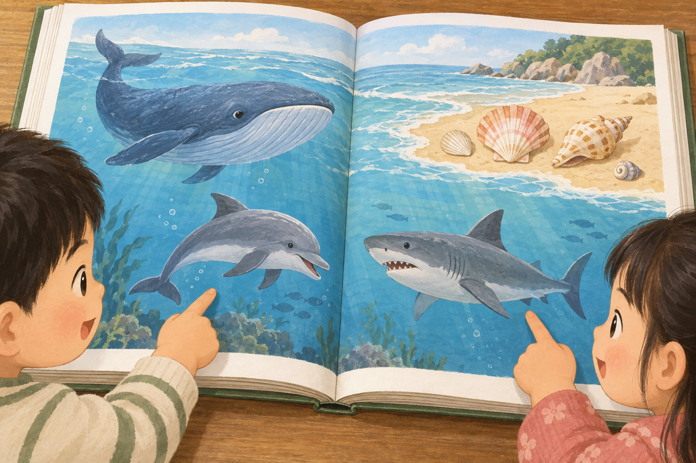
海里有鲸、海豚和鲨鱼，海边有贝壳。我们在书里找它们。
生成提示词
Use case: illustration-story. One finished landscape 3:2 picture-book illustration for a Chinese literacy app, ages 5–6. Warm cream, sage green and natural muted colors; soft hand-painted gouache texture, friendly expressive East Asian people where the story needs people, clear subjects readable on a phone, uncluttered background. Illustrate the exact Chinese story below, interpreting actions and relationships literally and accurately. Use one coherent scene unless the story explicitly needs successive moments; for a sequence use two or three clearly separated wordless narrative panels, consistent characters and setting. No titles, captions, lettering, numbers, speech bubbles, logos or watermarks. No flashcard grids. No additional narrative characters or unrelated props. Natural anatomy, clear hands and object contact, all important subjects fully in frame. Chapter: 谁在海里游. Exact story (do not print text): 海里有鲸、海豚和鲨鱼，海边有贝壳。我们在书里找它们。 Critical framing: These are illustrations INSIDE a clearly visible large open picture book resting on a table. The book fills most of the frame, with visible page edges and binding. All named animals/plants/scenery are flat printed pictures within the page boundaries, never real creatures around a child. Use close-up book framing so all named subjects remain easy to recognize.
c049 看动物的身体
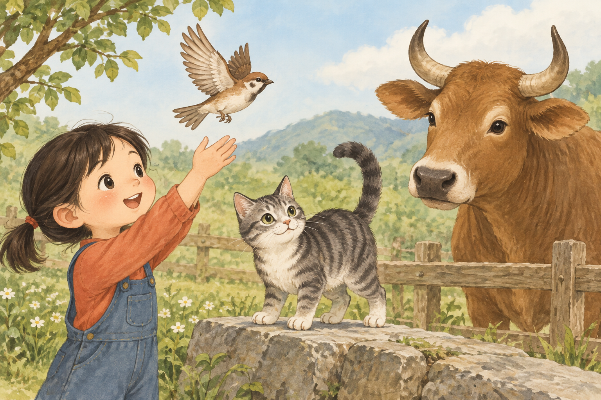
鸟有翅膀和羽毛，猫有尾巴和爪子，牛头上有角。
生成提示词
Use case: illustration-story. One finished landscape 3:2 picture-book illustration for a Chinese literacy app, ages 5–6. Warm cream, sage green and natural muted colors; soft hand-painted gouache texture, friendly expressive East Asian people where the story needs people, clear subjects readable on a phone, uncluttered background. Illustrate the exact Chinese story below, interpreting actions and relationships literally and accurately. Use one coherent scene unless the story explicitly needs successive moments; for a sequence use two or three clearly separated wordless narrative panels, consistent characters and setting. No titles, captions, lettering, numbers, speech bubbles, logos or watermarks. No flashcard grids. No additional narrative characters or unrelated props. Natural anatomy, clear hands and object contact, all important subjects fully in frame. Chapter: 看动物的身体. Exact story (do not print text): 鸟有翅膀和羽毛，猫有尾巴和爪子，牛头上有角。
c051 花园里的颜色
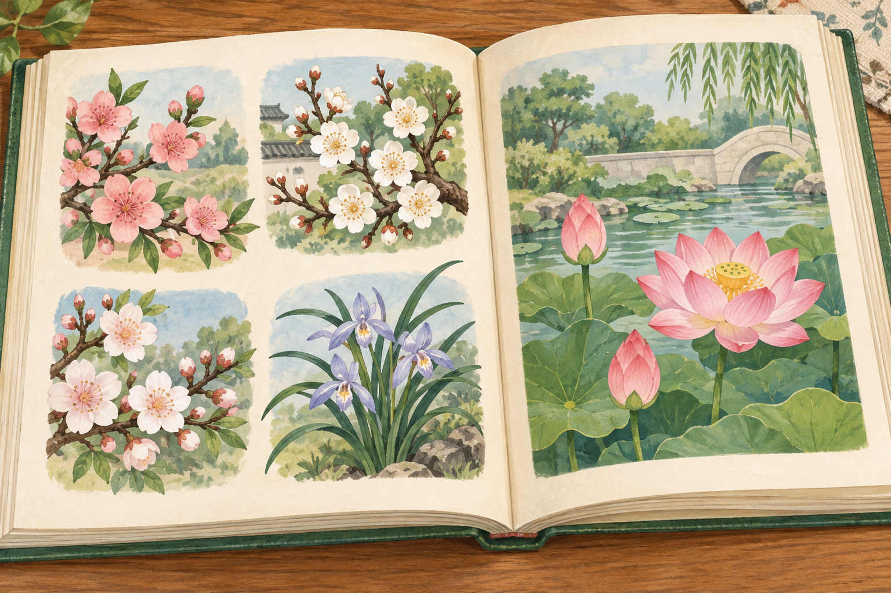
花册里有桃花、梅花、杏花和兰花。翻一页，池里还有荷花。
生成提示词
Use case: illustration-story. One finished landscape 3:2 picture-book illustration for a Chinese literacy app, ages 5–6. Warm cream, sage green and natural muted colors; soft hand-painted gouache texture, friendly expressive East Asian people where the story needs people, clear subjects readable on a phone, uncluttered background. Illustrate the exact Chinese story below, interpreting actions and relationships literally and accurately. Use one coherent scene unless the story explicitly needs successive moments; for a sequence use two or three clearly separated wordless narrative panels, consistent characters and setting. No titles, captions, lettering, numbers, speech bubbles, logos or watermarks. No flashcard grids. No additional narrative characters or unrelated props. Natural anatomy, clear hands and object contact, all important subjects fully in frame. Chapter: 花园里的颜色. Exact story (do not print text): 花册里有桃花、梅花、杏花和兰花。翻一页，池里还有荷花。 Critical framing: These are illustrations INSIDE a clearly visible large open picture book resting on a table. The book fills most of the frame, with visible page edges and binding. All named animals/plants/scenery are flat printed pictures within the page boundaries, never real creatures around a child. Use close-up book framing so all named subjects remain easy to recognize.
c052 秋天的叶子
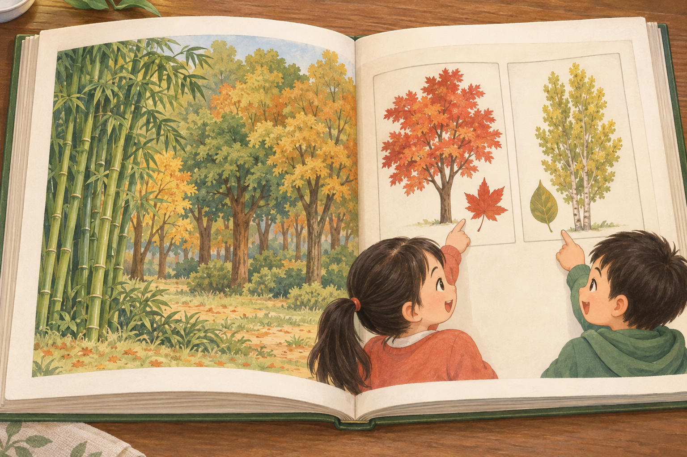
竹子旁是一片树林。我们在森林图里找到枫树和杨树。
生成提示词
Use case: illustration-story. One finished landscape 3:2 picture-book illustration for a Chinese literacy app, ages 5–6. Warm cream, sage green and natural muted colors; soft hand-painted gouache texture, friendly expressive East Asian people where the story needs people, clear subjects readable on a phone, uncluttered background. Illustrate the exact Chinese story below, interpreting actions and relationships literally and accurately. Use one coherent scene unless the story explicitly needs successive moments; for a sequence use two or three clearly separated wordless narrative panels, consistent characters and setting. No titles, captions, lettering, numbers, speech bubbles, logos or watermarks. No flashcard grids. No additional narrative characters or unrelated props. Natural anatomy, clear hands and object contact, all important subjects fully in frame. Chapter: 秋天的叶子. Exact story (do not print text): 竹子旁是一片树林。我们在森林图里找到枫树和杨树。 Critical framing: These are illustrations INSIDE a clearly visible large open picture book resting on a table. The book fills most of the frame, with visible page edges and binding. All named animals/plants/scenery are flat printed pictures within the page boundaries, never real creatures around a child. Use close-up book framing so all named subjects remain easy to recognize.
c053 找一找水在哪里
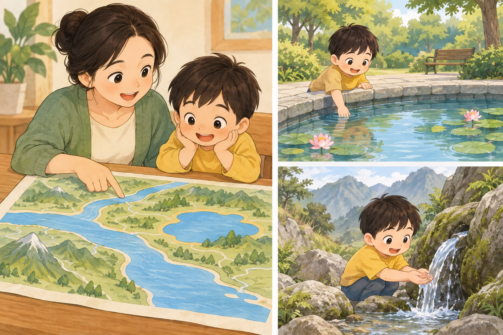
地图上有江、河和湖。公园里有水池，山边有泉水。
生成提示词
Use case: illustration-story. One finished landscape 3:2 picture-book illustration for a Chinese literacy app, ages 5–6. Warm cream, sage green and natural muted colors; soft hand-painted gouache texture, friendly expressive East Asian people where the story needs people, clear subjects readable on a phone, uncluttered background. Illustrate the exact Chinese story below, interpreting actions and relationships literally and accurately. Use one coherent scene unless the story explicitly needs successive moments; for a sequence use two or three clearly separated wordless narrative panels, consistent characters and setting. No titles, captions, lettering, numbers, speech bubbles, logos or watermarks. No flashcard grids. No additional narrative characters or unrelated props. Natural anatomy, clear hands and object contact, all important subjects fully in frame. Chapter: 找一找水在哪里. Exact story (do not print text): 地图上有江、河和湖。公园里有水池，山边有泉水。
c054 看看天空
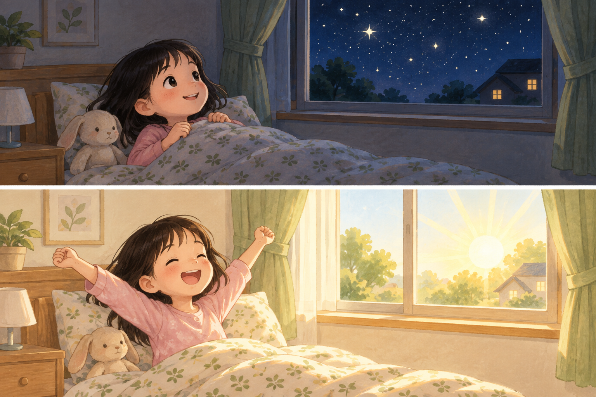
黑夜里，天空有星星。早上阳光来了，屋里亮起来。
生成提示词
Use case: illustration-story. One finished landscape 3:2 picture-book illustration for a Chinese literacy app, ages 5–6. Warm cream, sage green and natural muted colors; soft hand-painted gouache texture, friendly expressive East Asian people where the story needs people, clear subjects readable on a phone, uncluttered background. Illustrate the exact Chinese story below, interpreting actions and relationships literally and accurately. Use one coherent scene unless the story explicitly needs successive moments; for a sequence use two or three clearly separated wordless narrative panels, consistent characters and setting. No titles, captions, lettering, numbers, speech bubbles, logos or watermarks. No flashcard grids. No additional narrative characters or unrelated props. Natural anatomy, clear hands and object contact, all important subjects fully in frame. Chapter: 看看天空. Exact story (do not print text): 黑夜里，天空有星星。早上阳光来了，屋里亮起来。
c055 下雪的日子
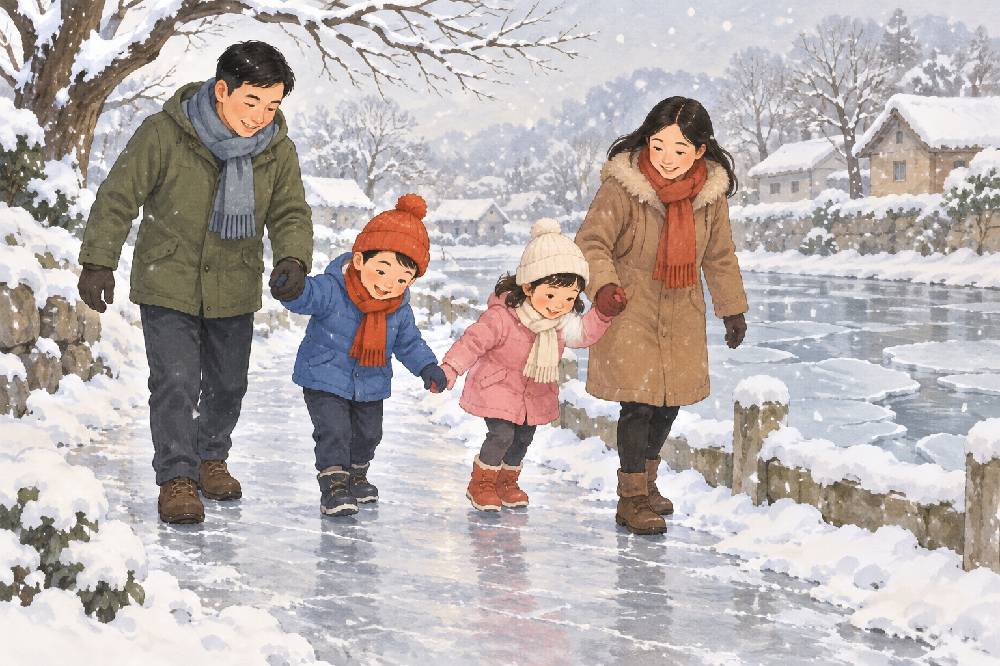
下雪了，天气冷。水结成冰，路面冻得很滑，我们和大人慢慢走。
生成提示词
Use case: illustration-story. One finished landscape 3:2 picture-book illustration for a Chinese literacy app, ages 5–6. Warm cream, sage green and natural muted colors; soft hand-painted gouache texture, friendly expressive East Asian people where the story needs people, clear subjects readable on a phone, uncluttered background. Illustrate the exact Chinese story below, interpreting actions and relationships literally and accurately. Use one coherent scene unless the story explicitly needs successive moments; for a sequence use two or three clearly separated wordless narrative panels, consistent characters and setting. No titles, captions, lettering, numbers, speech bubbles, logos or watermarks. No flashcard grids. No additional narrative characters or unrelated props. Natural anatomy, clear hands and object contact, all important subjects fully in frame. Chapter: 下雪的日子. Exact story (do not print text): 下雪了，天气冷。水结成冰，路面冻得很滑，我们和大人慢慢走。
c056 暖暖的天气
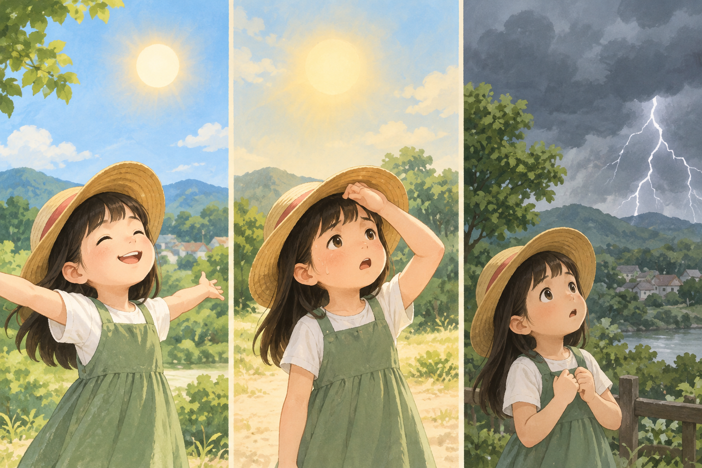
晴天里暖暖的，中午有点热。后来转阴，还响起了雷声。
生成提示词
Use case: illustration-story. One finished landscape 3:2 picture-book illustration for a Chinese literacy app, ages 5–6. Warm cream, sage green and natural muted colors; soft hand-painted gouache texture, friendly expressive East Asian people where the story needs people, clear subjects readable on a phone, uncluttered background. Illustrate the exact Chinese story below, interpreting actions and relationships literally and accurately. Use one coherent scene unless the story explicitly needs successive moments; for a sequence use two or three clearly separated wordless narrative panels, consistent characters and setting. No titles, captions, lettering, numbers, speech bubbles, logos or watermarks. No flashcard grids. No additional narrative characters or unrelated props. Natural anatomy, clear hands and object contact, all important subjects fully in frame. Chapter: 暖暖的天气. Exact story (do not print text): 晴天里暖暖的，中午有点热。后来转阴，还响起了雷声。
c057 四季慢慢变
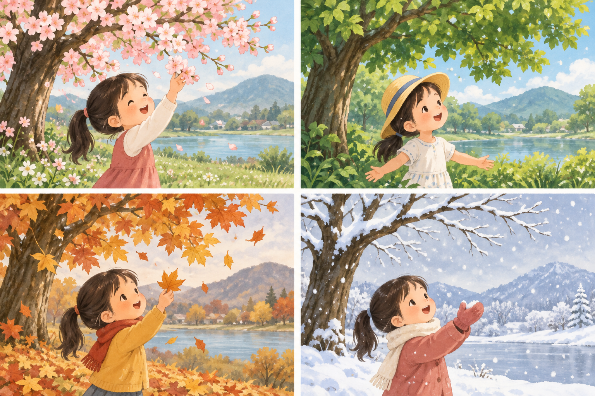
春天开花，夏天树绿，秋天叶落，冬天下雪。四季各有好看的景色。
生成提示词
Use case: illustration-story. One finished landscape 3:2 picture-book illustration for a Chinese literacy app, ages 5–6. Warm cream, sage green and natural muted colors; soft hand-painted gouache texture, friendly expressive East Asian people where the story needs people, clear subjects readable on a phone, uncluttered background. Illustrate the exact Chinese story below, interpreting actions and relationships literally and accurately. Use one coherent scene unless the story explicitly needs successive moments; for a sequence use two or three clearly separated wordless narrative panels, consistent characters and setting. No titles, captions, lettering, numbers, speech bubbles, logos or watermarks. No flashcard grids. No additional narrative characters or unrelated props. Natural anatomy, clear hands and object contact, all important subjects fully in frame. Chapter: 四季慢慢变. Exact story (do not print text): 春天开花，夏天树绿，秋天叶落，冬天下雪。四季各有好看的景色。